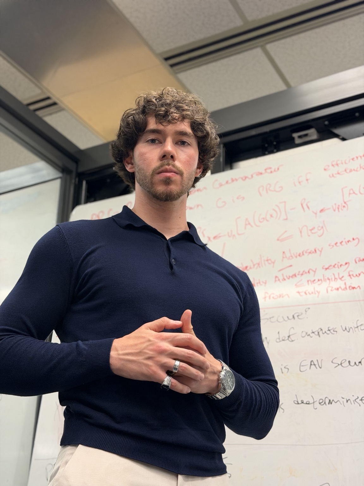
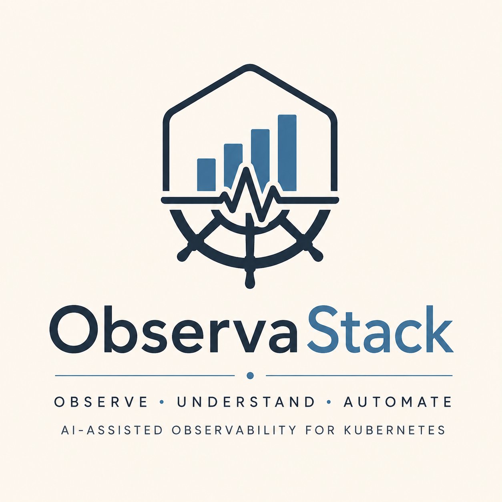
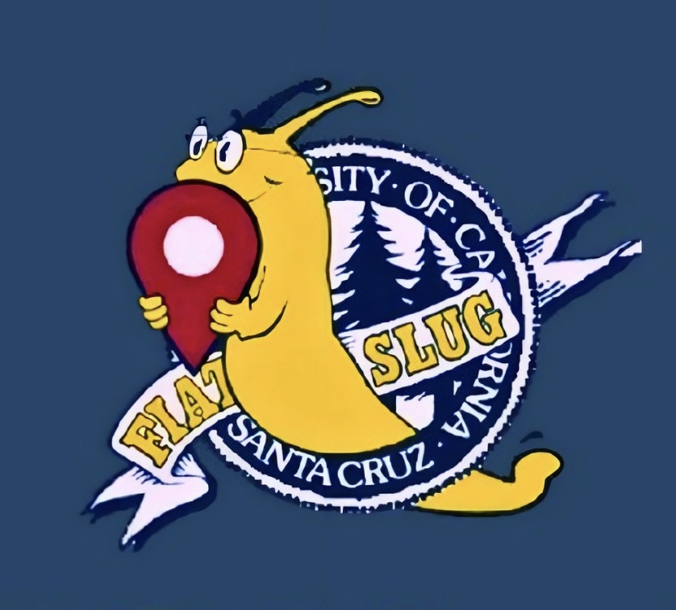
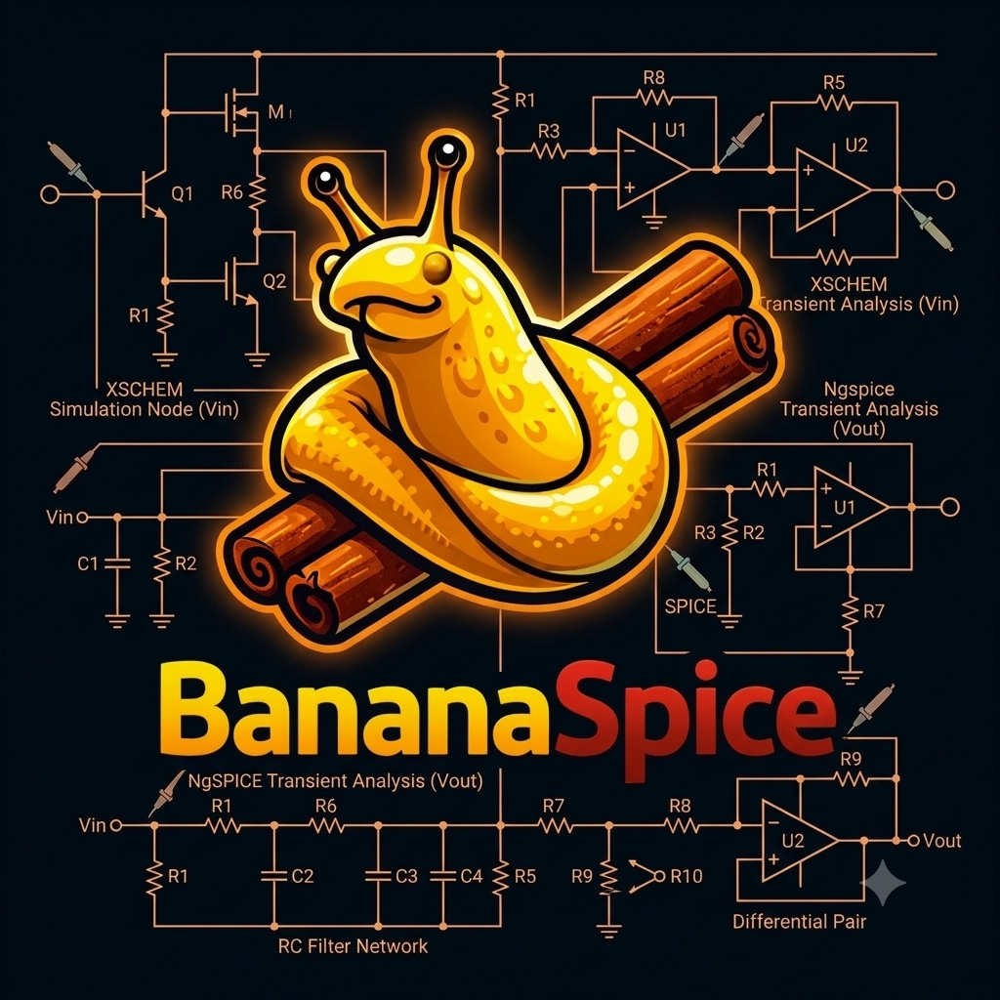
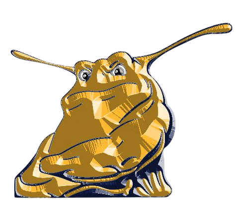

Living World
A research prototype investigating how LLMs can become aware of game state, NPC behavior, history, reputation, and player emotion instead of functioning as isolated chatbots.
View research case studyComputer Science · Software Engineering · Security
Computer Science graduate from the University of California, Santa Cruz, with broad technical interests and a growing focus on security.

01
Detailed case studies will be added as Murat's project materials are reviewed.
A research prototype investigating how LLMs can become aware of game state, NPC behavior, history, reputation, and player emotion instead of functioning as isolated chatbots.
View research case study
Cloud · Observability · Kubernetes
An AI-assisted observability platform exploring cloud-native monitoring with FastAPI, OpenTelemetry, Prometheus, Grafana, and Kubernetes.
View case study
Mobile · Full Stack
A collaborative map application for creating, discovering, and joining campus meetups.
View case study
Simulation · Graphics · Systems
A browser-based visualization layer that turns Xschem schematics and NGSpice simulation data into interactive 3D circuits with live voltage animation.
View case studyForensics · Networking · CTF Practice
Hands-on coursework and public challenges across Wireshark analysis, digital forensics, Linux, exploitation fundamentals, and cryptography.
View security experienceAI Systems · Security · Data Engineering
A multi-stage LLM pipeline that generates, diversifies, validates, repairs, and publishes ATT&CK-aligned command data.
View case study02
Kept broad for now, then refined according to the strongest project evidence.
Cybersecurity
Software Engineering
Algorithms
Systems
Artificial Intelligence
Computer Graphics

University of California, Santa Cruz
Bachelor of Science
Academic distinction
Recognized throughout undergraduate study for sustained academic performance.
Graduate study
Continuing graduate study in Computer Science at UC Santa Cruz.
Technical focus